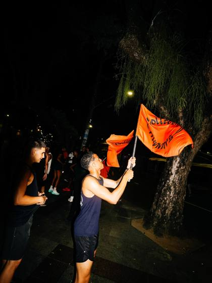
After Night Rnnrs
Corre noturno do Campo Grande ao Pelourinho, com som no percurso e dj set na chegada.
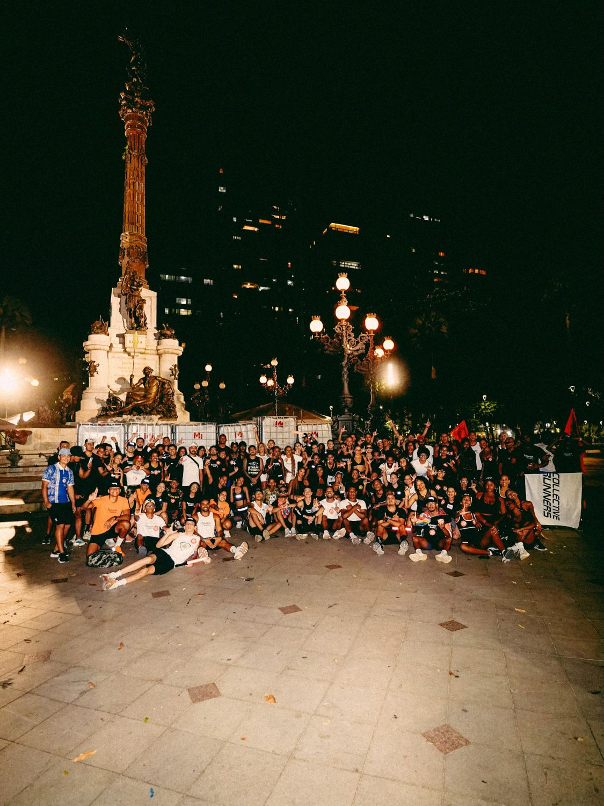
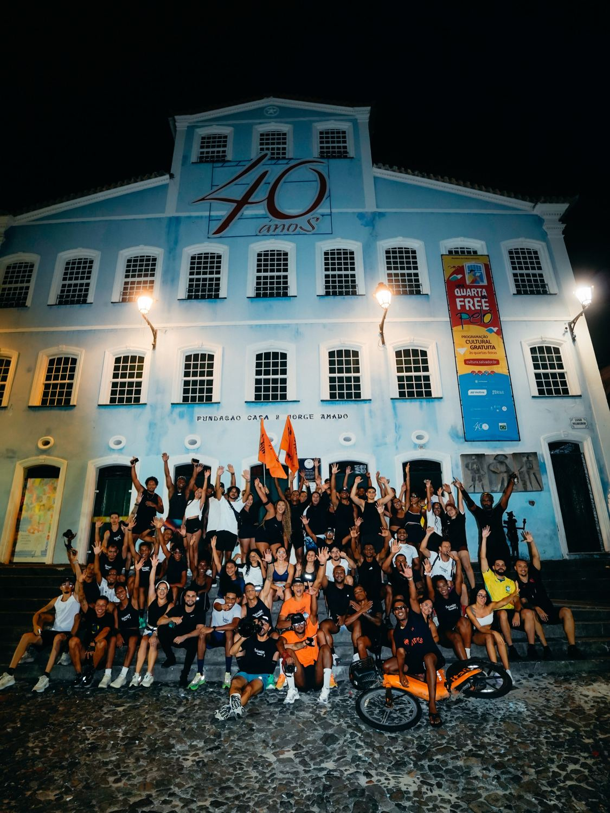
Running crew de Salvador. Camisa preta ou branca, e chega no horário.
O corre é leve, o ritmo é confortável. A rua inteira escuta a gente passar.
O pelotão para. Ninguém segue até o último chegar.
Corrida, cultura, música e comunidade. Nosso corre é 100% gratuito.
O Collective Runners junta corrida, cultura, música e comunidade. Sai do Campo Grande e termina em baile no Pelourinho. Tem corre das meninas, corre da criançada, corre de noite e encontro cultural no Farol. A regra é uma só: ninguém fica pra trás.
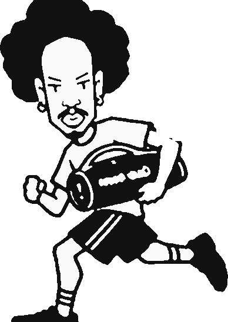
Cada frente tem seu jeito. Todas saem do mesmo lugar: gente que quer ocupar Salvador correndo junto.

Corre noturno do Campo Grande ao Pelourinho, com som no percurso e dj set na chegada.
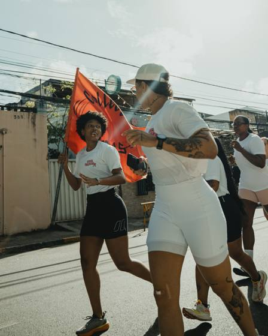
Corre feito por e para mulheres. “Quando mulheres correm juntas, ninguém fica para trás.”
Manhã no Parque da Cidade lembrando a importância da prevenção do câncer de mama.
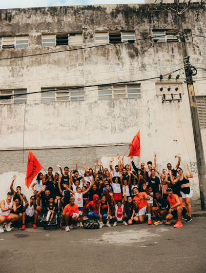
A rua também é lugar de brincar. Segundo ano seguido de corre pra criançada.
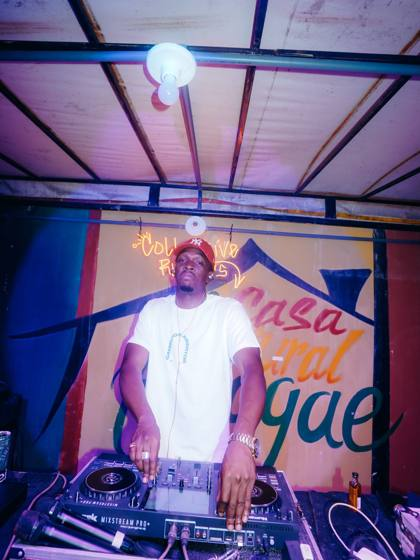
A chegada é só o começo: Casa Cultural do Reggae, DJs e artistas convidados.
Encontros com outras crews e o mergulho depois do corre. Tá tudo nos destaques do Instagram.
Os rolos de cada corre. Toque numa foto pra ver grande. Membros veem o arquivo completo.
Marcos tirados do que o próprio coletivo publicou. O capítulo da fundação a coordenação escreve pelo painel.
O coletivo faz a primeira ação pensada só para a criançada. Em 2026 ela volta, “pelo segundo ano consecutivo”.
Diversão, brincadeira e movimento, com corealização de @doca1ssa. Correr vai muito além de cruzar uma linha de chegada.
Corre das meninas com a MOMA Cookie Lab, falando de cuidado, prevenção e diagnóstico precoce.
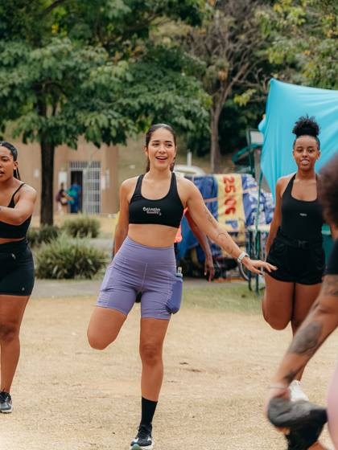
Saída do Campo Grande, chegada na Praça Cultural do Reggae, no Pelourinho, com dj set de @djakani. Corrida, cultura, música e comunidade na mesma noite.
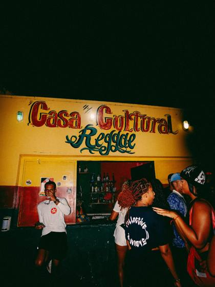
Corre feminino de 4 km na Pituba, com camiseta exclusiva da parceria em peças limitadas.
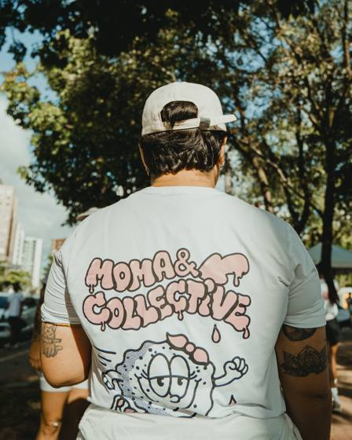
4 km com som no percurso todo e a noite fechando na Casa Cultural do Reggae, com seis DJs e artistas convidados.
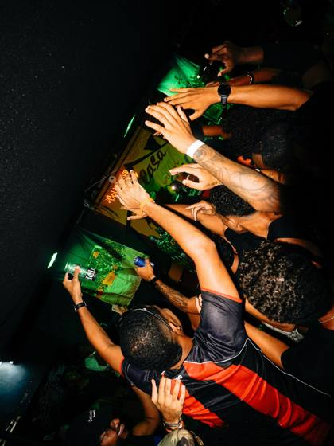
O percurso continua. A próxima parada está na agenda.
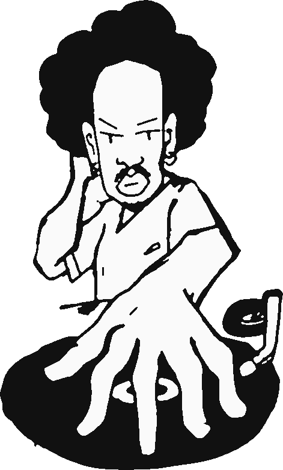
A lojinha do coletivo está nascendo. As peças entram aqui primeiro, e quem está na lista de espera fica sabendo antes.
Entra na comunidade do WhatsApp, segue no Strava e aparece no próximo encontro. Não precisa ser rápido. Precisa chegar.